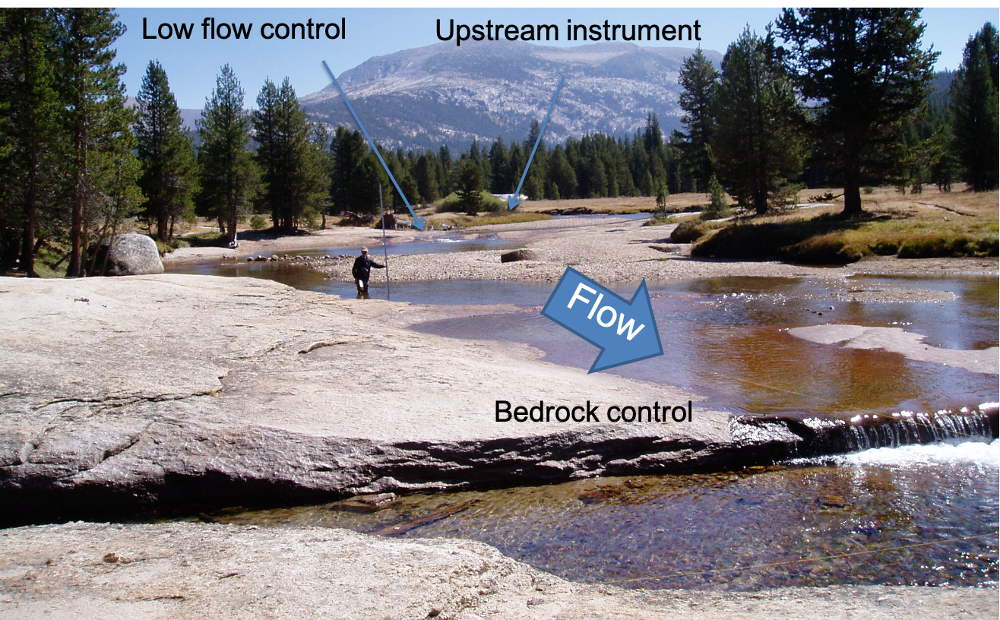

Lab 7-3: MCMC Rating Curves#
(Steven Pestana, 2019 | Derived from CEE599_bayesian_rating_curves_Lab6_v2.m by Jessica Lundquist)
import numpy as np
import pandas as pd
import scipy.stats as st
import matplotlib.pyplot as plt
import scipy.io as sio
%matplotlib inline
Load in the provided data:#
We’re provided data in a .mat format (MATLAB’s data file format). The scipy.io library has a function that allows us to read these types of files. Take a look at its documentation:
sio.loadmat?
Now load the Lyell canyon streamflow data:
data = sio.loadmat('../data/Lyell_h_Q_sorted.mat')
What kind of data structure is our data in?
type(data)
dict
This is a dictionary. Read more about python dictionaries here.
# See what our data looks like in a dictionary data structure
data
{'__header__': b'MATLAB 5.0 MAT-file, Platform: MACI64, Created on: Tue Nov 3 14:17:54 2015',
'__version__': '1.0',
'__globals__': [],
'h1': array([[0.1805],
[0.2197],
[0.2406],
[0.2407],
[0.2565],
[0.2822],
[0.285 ],
[0.2904],
[0.2907],
[0.2907],
[0.2925],
[0.3066],
[0.3185],
[0.3227],
[0.3405],
[0.3492],
[0.3648],
[0.3668],
[0.3757],
[0.3781],
[0.3814],
[0.383 ],
[0.3913],
[0.3913],
[0.4006],
[0.408 ],
[0.4319],
[0.4957],
[0.4982],
[0.5227],
[0.5325],
[0.5391],
[0.5427],
[0.5638],
[0.571 ],
[0.573 ],
[0.6096],
[0.6144],
[0.6358],
[0.6372],
[0.6437],
[0.644 ],
[0.673 ],
[0.6753],
[0.6757],
[0.6825],
[0.6873],
[0.696 ],
[0.696 ],
[0.7061],
[0.712 ],
[0.724 ],
[0.7369],
[0.7443],
[0.745 ],
[0.7657],
[0.784 ],
[0.7868],
[0.8142],
[0.8214],
[0.836 ],
[0.8497],
[0.8515],
[0.9354],
[0.9485],
[0.9491],
[0.9503],
[0.967 ],
[0.9681],
[0.9752],
[0.9849],
[0.989 ],
[0.994 ],
[1.0806],
[1.1074],
[1.109 ],
[1.109 ],
[1.1134],
[1.1281]]),
'Qobs1': array([[ 0.07785993],
[ 0.07191426],
[ 0.14382852],
[ 0.16817745],
[ 0.24348923],
[ 0.39043215],
[ 0.24745301],
[ 0.60957246],
[ 0.25481431],
[ 0.89864514],
[ 0.30351216],
[ 0.9946252 ],
[ 0.42780492],
[ 0.4360156 ],
[ 0.48131592],
[ 0.65911969],
[ 0.84938104],
[ 1.33494387],
[ 0.93431915],
[ 0.70498626],
[ 0.92242781],
[ 0.86268801],
[ 1.10900851],
[ 1.10900851],
[ 1.07078637],
[ 1.03624487],
[ 1.27831847],
[ 1.83381367],
[ 2.33891226],
[ 2.46971694],
[ 2.52973987],
[ 2.62515367],
[ 1.44281526],
[ 1.46404979],
[ 3.37544026],
[ 3.04219977],
[ 4.94509643],
[ 4.69990843],
[ 4.39214937],
[ 4.94509643],
[ 5.63422758],
[ 4.69990843],
[ 5.69878054],
[ 5.80778444],
[ 5.36214252],
[ 5.62516752],
[ 6.07647198],
[ 7.16311346],
[ 7.41792777],
[ 6.2800403 ],
[ 6.69765265],
[ 6.72568222],
[ 7.38621754],
[ 7.01022487],
[ 7.62432736],
[ 8.47229277],
[ 9.11668985],
[ 8.89613391],
[ 9.73985241],
[10.35338865],
[10.05015962],
[10.87236047],
[11.07026625],
[15.00573175],
[15.68523658],
[15.00573175],
[15.82680009],
[15.82680009],
[15.82680009],
[16.84605734],
[15.74186198],
[17.17165341],
[16.84605734],
[20.80983554],
[20.80983554],
[21.65921658],
[21.74415468],
[21.74415468],
[21.57427847]]),
'date_of_obs': array([[array(['9/26/08 16:30'], dtype='<U13')],
[array(['9/19/08 0:02'], dtype='<U12')],
[array(['9/10/08 21:35'], dtype='<U13')],
[array(['9/10/10 17:52'], dtype='<U13')],
[array(['8/20/07 18:22'], dtype='<U13')],
[array(['9/12/06 19:10'], dtype='<U13')],
[array(['8/13/07 18:10'], dtype='<U13')],
[array(['9/13/12 21:15'], dtype='<U13')],
[array(['9/5/12 18:57'], dtype='<U12')],
[array(['9/5/12 18:25'], dtype='<U12')],
[array(['9/6/07 21:50'], dtype='<U12')],
[array(['3/25/14 17:43'], dtype='<U13')],
[array(['9/5/07 21:11'], dtype='<U12')],
[array(['8/22/07 23:03'], dtype='<U13')],
[array(['8/2/07 22:05'], dtype='<U12')],
[array(['8/4/08 22:44'], dtype='<U12')],
[array(['7/30/07 22:05'], dtype='<U13')],
[array(['8/24/06 23:40'], dtype='<U13')],
[array(['7/16/07 20:25'], dtype='<U13')],
[array(['7/29/13 22:00'], dtype='<U13')],
[array(['7/28/08 19:07'], dtype='<U13')],
[array(['8/10/10 18:50'], dtype='<U13')],
[array(['6/25/07 23:00'], dtype='<U13')],
[array(['6/25/07 23:00'], dtype='<U13')],
[array(['7/25/08 20:10'], dtype='<U13')],
[array(['8/4/09 15:45'], dtype='<U12')],
[array(['8/4/10 18:44'], dtype='<U12')],
[array(['6/16/14 18:29'], dtype='<U13')],
[array(['7/11/08 18:44'], dtype='<U13')],
[array(['7/27/10 22:10'], dtype='<U13')],
[array(['5/29/08 22:40'], dtype='<U13')],
[array(['5/8/14 20:47'], dtype='<U12')],
[array(['5/28/08 21:43'], dtype='<U13')],
[array(['7/14/09 18:36'], dtype='<U13')],
[array(['7/22/10 17:34'], dtype='<U13')],
[array(['7/15/08 18:15'], dtype='<U13')],
[array(['5/31/07 17:05'], dtype='<U13')],
[array(['5/31/07 16:28'], dtype='<U13')],
[array(['6/15/09 15:39'], dtype='<U13')],
[array(['5/30/07 17:48'], dtype='<U13')],
[array(['7/26/06 17:38'], dtype='<U13')],
[array(['5/30/07 17:02'], dtype='<U13')],
[array(['6/26/08 16:00'], dtype='<U13')],
[array(['6/29/09 20:47'], dtype='<U13')],
[array(['6/17/09 20:47'], dtype='<U13')],
[array(['6/5/08 21:30'], dtype='<U12')],
[array(['6/2/08 17:12'], dtype='<U12')],
[array(['7/24/06 16:15'], dtype='<U13')],
[array(['7/24/06 16:15'], dtype='<U13')],
[array(['5/28/14 20:21'], dtype='<U13')],
[array(['6/26/08 3:30'], dtype='<U12')],
[array(['6/9/08 20:45'], dtype='<U12')],
[array(['6/12/08 0:10'], dtype='<U12')],
[array(['7/9/10 18:20'], dtype='<U12')],
[array(['6/17/08 16:15'], dtype='<U13')],
[array(['6/4/08 15:53'], dtype='<U12')],
[array(['6/15/06 19:12'], dtype='<U13')],
[array(['6/10/08 17:29'], dtype='<U13')],
[array(['5/14/09 21:11'], dtype='<U13')],
[array(['7/31/11 18:10'], dtype='<U13')],
[array(['5/26/09 18:00'], dtype='<U13')],
[array(['5/20/09 19:10'], dtype='<U13')],
[array(['5/21/08 21:30'], dtype='<U13')],
[array(['6/27/06 17:29'], dtype='<U13')],
[array(['6/20/06 22:13'], dtype='<U13')],
[array(['6/27/06 16:44'], dtype='<U13')],
[array(['6/29/06 17:20'], dtype='<U13')],
[array(['6/29/06 16:30'], dtype='<U13')],
[array(['6/29/06 16:26'], dtype='<U13')],
[array(['6/22/06 17:57'], dtype='<U13')],
[array(['5/20/08 23:40'], dtype='<U13')],
[array(['6/29/10 16:30'], dtype='<U13')],
[array(['6/22/06 17:06'], dtype='<U13')],
[array(['6/27/06 0:24'], dtype='<U12')],
[array(['6/27/06 1:28'], dtype='<U12')],
[array(['6/28/06 21:35'], dtype='<U13')],
[array(['6/28/06 21:35'], dtype='<U13')],
[array(['6/28/06 21:57'], dtype='<U13')],
[array(['6/21/06 3:47'], dtype='<U12')]], dtype=object)}
# Inspect the dictionary keys
data.keys()
dict_keys(['__header__', '__version__', '__globals__', 'h1', 'Qobs1', 'date_of_obs'])
We can convert this dictionary into a pandas dataframe and select only the columns of data that we want (ignoring the file metadata): (Even though we know, that in cases outside of the classroom, people only ignore metadata at their own peril.)
df = pd.DataFrame(np.hstack((data['date_of_obs'], data['h1'], data['Qobs1'])),
columns=['date_of_obs','h1', 'Qobs1'])
df.head()
| date_of_obs | h1 | Qobs1 | |
|---|---|---|---|
| 0 | [9/26/08 16:30] | 0.1805 | 0.07786 |
| 1 | [9/19/08 0:02] | 0.2197 | 0.071914 |
| 2 | [9/10/08 21:35] | 0.2406 | 0.143829 |
| 3 | [9/10/10 17:52] | 0.2407 | 0.168177 |
| 4 | [8/20/07 18:22] | 0.2565 | 0.243489 |
And make sure our date_of_obs is being interpreted as a datetime correctly (see documentation here and here):
df['date_of_obs'] = [pd.to_datetime(dt[0], format='%m/%d/%y %H:%M') for dt in df['date_of_obs']]
df.head()
| date_of_obs | h1 | Qobs1 | |
|---|---|---|---|
| 0 | 2008-09-26 16:30:00 | 0.1805 | 0.07786 |
| 1 | 2008-09-19 00:02:00 | 0.2197 | 0.071914 |
| 2 | 2008-09-10 21:35:00 | 0.2406 | 0.143829 |
| 3 | 2010-09-10 17:52:00 | 0.2407 | 0.168177 |
| 4 | 2007-08-20 18:22:00 | 0.2565 | 0.243489 |
Calculating rating curves#
At stream gauges all over the world, we measure a timeseries of water height at a fixed point, and we generally develop an empirical rating curve to determine discharge, which is volume of flow per unit time, in units of of \(m^3/s\) (cubic meters per second or cms) or \(ft^3/s\) (cubic feet per second of cfs).
In developing this rating curve, we are trying to solve for a, b, and c in the equation \(Q = a(h-b)^c\)
# First, let's plot all of the data we just read in.
plt.figure(figsize=(9,6))
plt.xlabel('stage (m)')
plt.ylabel('discharge (cms)')
plt.plot(df.h1,df.Qobs1,'k*')
[<matplotlib.lines.Line2D at 0x7f967c228490>]
#And plot the log transform of both variables
loght=np.log(df.h1.astype('float'))
logQ=np.log(df.Qobs1.astype('float'))
plt.figure(figsize=(9,6))
plt.xlabel('log(stage (m))')
plt.ylabel('log(discharge (cms))')
plt.plot(loght,logQ,'k*')
[<matplotlib.lines.Line2D at 0x7f967c23d8d0>]
Inspect the data#
You can see above that even with a log transform, the data do not fall on a straight line. If I squint at the graph above, I can imagine two lines through this data, with a break about midway through the data.
At this point, it’s a good idea to look at your field site and see what physical evidence there is that the rating curve might have a break point.

You can see from the photo above (and from the lecture notes), that at certain flow levels, this river stretch switches from being channel controlled to having a bedrock control, like a weir. From Open Channel Flow class (and from the lecture notes), we know that this changes the exponent in the stage-discharge equation, which would change the slope of our line here.
For simplicity, we will consider only the upper end of the rating curve, focusing on flows that are high enough to not be influenced by the pictured bedrock control.
PART 1: Linear Regression of Transformed Variables:#
As illustrated above, due to the nature of our channel, we would need to separate our variables and fit two lines to it. For simplicity, we will focus here on the upper portion of the rating curve, looking only at higher flows. Based on work by CEE M.S. student Gwyn Perry, the transition between the two slopes is about 0.54. I also want to ignore two outlier measurements right around this transition, so I choose to look at data above a stage height of 0.59. You can change this cut-off value and see how it changes the results. Ideally, we would have a survey of the location that identifies the exact stage when the bedrock control becomes dominant.
# Define a level where the transition occurs, where you need different rating curve coefficients.
h11 = 0.59
First, we identify the rows in our data frame that correspond to flows with h1 > h11, these correspond to data above the change in channel control.
Qobs_now = df.Qobs1[df.h1 > h11]
h_now = df.h1[df.h1 > h11]
In developing this rating curve, we are trying to solve for a, b, and c in the equation \(Q = a(h-b)^c\)
When we take the log of both sides, we get \(log(Q) = log(a) + c*log(h-b)\) Note that we can use linear regression to solve for \(log(a)\) – this would be \(B0\) in earlier code – and for \(c\) – this would be \(B1\) in earlier code. Note that we cannot directly solve for \(b\). We have to guess \(b\) (based on observations in the field or an iterative technique).
# based on field measurements, we know b must be between 10 and 50 cm,
# which is the same as 0.1 to 0.5 meters.
# We start with a guess.
b=0.28
# and we subtract this value off of the measured stream height
hobs_minusb=h_now.subtract(b)
print(hobs_minusb)
36 0.3296
37 0.3344
38 0.3558
39 0.3572
40 0.3637
41 0.364
42 0.393
43 0.3953
44 0.3957
45 0.4025
46 0.4073
47 0.416
48 0.416
49 0.4261
50 0.432
51 0.444
52 0.4569
53 0.4643
54 0.465
55 0.4857
56 0.504
57 0.5068
58 0.5342
59 0.5414
60 0.556
61 0.5697
62 0.5715
63 0.6554
64 0.6685
65 0.6691
66 0.6703
67 0.687
68 0.6881
69 0.6952
70 0.7049
71 0.709
72 0.714
73 0.8006
74 0.8274
75 0.829
76 0.829
77 0.8334
78 0.8481
Name: h1, dtype: object
#And plot the log transform of both variables
loght=np.log(hobs_minusb.astype('float'))
# note that the above is taking the log of the observed values minus b
logQ=np.log(Qobs_now.astype('float'))
plt.figure(figsize=(9,6))
plt.xlabel('log(stage - b (m))')
plt.ylabel('log(discharge (cms))')
plt.plot(loght,logQ,'k*')
[<matplotlib.lines.Line2D at 0x7f967bd6d950>]
With linear regression, we can only solve for two of the three unknowns in our rating curve equation: \(Q = a(h-b)^c\) which we have log transformed to be \(log(Q) = log(a) + c*log(h-b)\)
First, we will assume that b is 0.28 m, as we entered above. In practice, this is often estimated from field surveys as the maximum height of water in the measuring pool when flow stops. Often, this is not known precisely, so the homework will evaluate the uncertainty in this parameter.
We then use the same code from basic linear regresssion (Lab 4.3), where our calculated slope will be c, and our calculated intercept will be log(a).
x=loght
# Note that our x value here includes the log of our measured stage minus b (see above)
y=logQ
n = len(x)
B1 = ( n*np.sum(x*y) - np.sum(x)*np.sum(y) ) / ( n*np.sum(x**2) - np.sum(x)**2 ) # B1 parameter, slope
B0 = np.mean(y) - B1*np.mean(x) # B0 parameter, y-intercept
print('B0 : {}'.format(np.round(B0,4)))
print('B1 : {}'.format(np.round(B1,4)))
B0 : 3.4077
B1 : 1.7662
Just to clarify what we have here. \(B0 = log(a)\) and \(B1 = c\) and \(x = log(h-b)\). If we want to revert to our original equation, we solve for \(a = exp(B0)\) and \(c = B1\) and \(h = exp(x) + b\)
# Now, how do we find 95% confidence intervals? We do this for our estimates of logQ
# Again, borrowing from Lab 4.3
y_predicted = B0 + B1*x
residuals = (y - y_predicted)
# sum of squared errors
sse = np.sum(residuals**2)
# standard error of regression
s = np.sqrt(sse/(n-2))
# create an array of x values
p_x = np.linspace(x.min(),x.max(),100)
# using our model parameters to predict y values
p_y = B0 + B1*p_x
# calculate the standard error of the predictions
sigma_ep = np.sqrt( s**2 * (1 + 1/n + ( ( n*(p_x-x.mean())**2 ) / ( n*np.sum(x**2) - np.sum(x)**2 ) ) ) )
# our chosen alpha
alpha = 0.05
# compute our degrees of freedom with the length of the predicted dataset
n = len(p_x)
dof = n - 2
# get the t-value for our alpha and degrees of freedom
t = st.t.ppf(1-alpha/2, dof)
# compute the upper and lower limits at each of the p_x values
p_y_lower = p_y - t * sigma_ep
p_y_upper = p_y + t * sigma_ep
# First let's make a plot in the log-transformed space
plt.figure(figsize=(9,6))
plt.xlabel('log(stage - b (m))')
# Note that our x value in log space is the stage, or height, minus the offset b
plt.ylabel('log(discharge (cms))')
plt.plot(loght,logQ,'k*')
plt.plot(p_x,p_y)
plt.plot(p_x,p_y_lower,':r')
plt.plot(p_x,p_y_upper,':r')
[<matplotlib.lines.Line2D at 0x7f967c0b7b50>]
# Now we transform each piece back into the original form
Q_predict=np.exp(p_y)
Q_predict_upper=np.exp(p_y_upper)
Q_predict_lower=np.exp(p_y_lower)
x_topredict=np.exp(p_x) + b
# Plot the original data and then the prediction lines
plt.figure(figsize=(9,6))
plt.xlabel('stage (m)')
plt.ylabel('discharge (cms)')
plt.plot(h_now,Qobs_now,'k*')
plt.plot(x_topredict,Q_predict)
plt.plot(x_topredict,Q_predict_lower,':r')
plt.plot(x_topredict,Q_predict_upper,':r')
[<matplotlib.lines.Line2D at 0x7f967c1412d0>]
Work on your own#
Now, repeat the above but with different estimates of what b must be. Create one plot with multiple estimates of b and see how uncertain that component of the equation is in relation to parameters a and c. Note that you do not need to repeat the 95% confidence intervals with each step. Just make plots of the different predicted lines along with the observations for b = 0.10, 0.20, 0.30, 0.40, and 0.50 m.
It is helpful to check your plots in both log space and in the original space – note that the x-axis in log space is for the transformed variable that includes b, which is log(h-b)
Part 2: Brute force parameter estimation#
For this example, my priors are uniform. As shown in the lecture slides, I will sample the space and not use a random number generator for the first go around.
Recall that we are trying to solve for a, b, and c in the equation \(Q = a(h-b)^c\)
I’ll just take 10 values out of each uniform distribution.
nx=10
# for c, we know that at higher flows (which we've restricted our sample to), c = 5/3 or 1.67
# We allow c to vary slightly around this theoretical value
c = np.linspace(1.67-0.05,1.67+0.05,nx)
# b is an empirical constant of where the upper level equation intersects 0
# b only represents the true 0 level for the lower portion of the rating curve equation
# here, we guess a range of values based on visual inspection of our data
b = np.linspace(0.15,0.45,nx)
# a can be estimated as a function of channel slope and roughness (see paper by LeCoz et al.)
# for now, we will just guess a range of values that seem reasonable by visual inspection
a = np.linspace(5,50,nx)
# Set up the arrays we'll populate with data below
Qest = np.ones((10,10,10,h_now.size)) # for estimating Q with each parameter set
Qfit = np.ones((10,10,10)) # for RMSE values
# Iterate through all combinations of a, b, and c parameters
# Then calculate Qest, and Qfit (RMSE)
for ic in range(nx):
for ib in range(nx):
for ia in range(nx):
Qest[ia,ib,ic,:] = a[ia] * (h_now-b[ib])**c[ic]
temp = np.reshape(Qest[ia,ib,ic,:],Qobs_now.size)
Qfit[ia,ib,ic]=np.sqrt( np.mean( (temp-Qobs_now)**2 ) ) # calculate RMSE for this parameter set
Make some plots to see what this did#
Which parameters seemed the best?
f, ax = plt.subplots(1,2,figsize=(9,4))
ic = 0 # select the first value of c
Qfit_temp = np.reshape(Qfit[:,:,ic],[10,10]);
CS3=ax[0].contourf(b,a,Qfit_temp)
ax[0].set_xlabel('b')
ax[0].set_ylabel('a')
ax[0].set_title('RMSE (b & a) at c = {}'.format(np.round(c[ic],2)))
cbar1=f.colorbar(CS3)
cbar1.ax.set_ylabel('RMSE (cms)')
ic = -1 # the last value of c (using the index "-1" to represent the last value in the array)
Qfit_temp2 = np.reshape(Qfit[:,:,ic],[10,10]);
CS4=ax[1].contourf(b,a,Qfit_temp2)
ax[1].set_xlabel('b')
ax[1].set_ylabel('a')
ax[1].set_title('RMSE (b & a) at c = {}'.format(np.round(c[ic],2)))
cbar=f.colorbar(CS4)
cbar.ax.set_ylabel('RMSE (cms)')
f.tight_layout()
From the above, we can see that c makes a relatively slight difference, but a and b vary with each other quite a bit. Also note that there are a range of sets of a and b that have nearly equally good fits (the dark blue color).
And then plot this as rating curves to see how our different parameter choices impact the spread c in estimated discharge as a function of h#
plt.figure(figsize=(9,6))
# Note, because c doesn't matter much, we will just choose a c value from the middle
for ia in range(nx):
for ib in range(nx):
plt.plot(h_now,np.reshape(Qest[ia,ib,5,:],h_now.size))
plt.xlabel('stage (m)')
plt.ylabel('discharge (cms)')
plt.plot(h_now,Qobs_now,'k*')
[<matplotlib.lines.Line2D at 0x7f967c1bb350>]
Now say we ony want to sort those realizations according to RMSE. (Clearly some curves are better than others)#
# Reshape Qfit and Qest for a single c value to only look at variations of a and b
ic = 5
Qfit2 = np.reshape(Qfit[:,:,ic],[10,10])
Qest2 = np.reshape(Qest[:,:,ic,:],[10,10,h_now.size])
# Find the corresponding Qest values for different ranges of RMSE
Qest_rmse1 = Qest2[Qfit2<1] # RMSE < 1
Qest_rmse3 = Qest2[(Qfit2>=1) & (Qfit2<3)] # 1 <= RMSE < 3
Qest_rmse5 = Qest2[(Qfit2>=3) & (Qfit2<5)] # 3 <= RMSE < 5
plt.figure(figsize=(8,6))
# Plot the rating curves with RMSE between 3 and 5 cms
for i in range(Qest_rmse5.shape[0]):
if i ==0:
label='RMSE = 3-5 cms'
else:
label=None
plt.plot(h_now, Qest_rmse5[i],'m',alpha=0.5,label=label)
# Plot the rating curves with RMSE between 1 and 3 cms
for i in range(Qest_rmse3.shape[0]):
if i ==0:
label='RMSE = 1-3 cms'
else:
label=None
plt.plot(h_now, Qest_rmse3[i],'r',alpha=0.5,label=label)
# Finally plot the rating curves with RMSE < 1 cms
for i in range(Qest_rmse1.shape[0]):
if i ==0:
label='RMSE < 1 cms'
else:
label=None
plt.plot(h_now, Qest_rmse1[i],'b',alpha=1,label=label)
plt.xlabel('stage (m)')
plt.ylabel('discharge (cms)')
plt.plot(h_now,Qobs_now,'k*',label='observations')
plt.legend();
Note that what we’re starting to do here is to sort our rating curve parameter space into more likely and less likely parameter sets, based on how well they fit the data. However, this is imprecise, and we cannot quantify 95% uncertainty limits in any discharge estimation.
In your homework, you will use log-transform regression to fit the a and c coefficients over a range of b values. Look at how the a and b values vary as a function of RMSE here and compare it to how the a and b values vary together in your multiple fits using log-transform regression. What do you notice?
PART 2: Use MCMC to sample the parameter space.#
With uniform priors, this is very similar to the part 1 parameter estimation problem.
So, the above gives us an idea of Monte-Carlo parameter estimation but does not illustrate Bayesian or MCMC routines
I’m going to simplify to a two parameter problem, where I say that c=1.66 and that I know that (okay, not exactly true but it seemed to matter the least in this particular problem), and I’m going to start with the expected values from my priors for my initial guess.
b0 = 0.2833
a0 = 25
c0 = 1.66 # and this one I won't vary
Now, we will ask the computer to navigate the parameter space. I will determine where to go according to how well my modeled Q fits my observed Q at all of my measurement points, with the understanding that the parameters that give me the minimum error are most likely to be true.
initial guess = likelihood = P(Q|theta), that’s our model compared to our obs – only need relative sense of error, so we look at the SSE’s
Qest0 = a0 * (h_now-b0)**c0
SSE0 = np.sum((Qest0-Qobs_now)**2)
SSE0
158.11032268871054
Now, in the bayesian sense, we have to multiply this by the liklihood of our parameters P(theta) – if I ignore normalization for now, I currently have uniform priors, so if a and b fall within my range, P0 is 1, and if either falls out of my range, P0 is 0 (not possible). (Note that this is the simplest case. If we had a normal distribution for the prior, we would multiply that by the liklihood as we did in lab 5.)
# So, I set my limits of my uniform distribution
amin = 5
amax = 50
bmin = 0.15
bmax = 0.45
# for first step, I know I picked values in with the range, so
P0 = 1
Lmc = 10000 #number of steps to run MCMC routine for.
burn_in = 1000 #estimate the number of steps before Markov Chain becomes stationary
# basically, the burn-in steps will not be used in calculating final probabilities because
# they depend on the initial parameter estimates.
# Initialize arrays to store results in
PthetaQ = np.ones((Lmc,1))
amc = np.zeros((Lmc,1))
bmc = np.zeros((Lmc,1))
And we can calculate P(theta|Q).
Note that we are defining this by our goodness-of-fit statistic. Here, we use the sum of squared errors, where if it is smaller, P(theta|Q) is greater, and the choice is a better fit.
PthetaQ[0] = SSE0*P0 # this is our starting point.
# Note that this calculation is not a true probability of P(theta|Q) but a relative metric
amc[0] = a0
bmc[0] = b0
# We save all the values at each step.
Now we start marching in MCMC space…
I need to randomly pick a new location. This is art, so I’m going to use two gaussians around my current location with sigma equal to the half-width of my prior distribution to pick a test jump location. I will use a Gibbs approach and jump in one variable followed by the other each time. (Note that a lot of the active research in MCMC code involves both how you pick your initial position and in how you pick your jumping strategy.)
I’m going to assume that my two parameters are totally independent (probably not true – a next step would be to try a bivariate gaussian, but we stick with the simple case).
for imc in range(1,Lmc):
# first we jump in a
newjumpa = amc[imc-1] + (amax-amin)/(10*np.random.normal())
# Now we repeat with a jump in b, assuming it's totally independent of a
# and require both to be within their uniform distributions.
newjumpb = bmc[imc-1] + (bmax-bmin)/(10*np.random.normal())
if (newjumpa >= amin) and (newjumpa <= amax) and (newjumpb >= bmin) and (newjumpb <= bmax):
#then the prior is okay, and we can proceed
# (Note that prior makes any choice outside of our set range impossible)
Qest1 = newjumpa*(h_now-newjumpb)**c0
# calculate how well the parameters at our new location lead to a model that matches the data
SSE1=np.sum((Qest1-Qobs_now)**2)
# posterior is SSE1*1 (because we're within the prior uniform domain)
# the if statement essentially says everything else is multiplied by 0
if SSE1 < PthetaQ[imc-1]:
# then the error is less, and we found a better place, and we update a and b
amc[imc] = newjumpa
bmc[imc] = newjumpb
PthetaQ[imc] = SSE1 # this becomes the one to beat
else:
jumpscore = PthetaQ[imc-1]/SSE1 # this gives a number between 0 and 1
# This is essentially a rating of how much worse this new location is than
# where you are right now. The sum of squared errors is larger, but by how much
# Generate random number from 0 to 1, so that we will jump with a probability of
# the jumpscore
# if our new SSE is 90% as good as our current one, we jump there 90% of the time;
# if it's 10% as good, we jump there 10% of the time
if np.random.uniform() <= jumpscore:
# then we go there
amc[imc] = newjumpa
bmc[imc] = newjumpb
PthetaQ[imc] = SSE1 # this becomes the one to beat
else:
amc[imc]=amc[imc-1]
bmc[imc]=bmc[imc-1]
PthetaQ[imc]=PthetaQ[imc-1] # we stay where we are for another timestep
else:
# you are outside of the bounds of the uniform prior, so posterior would be 0 and we don't go there
amc[imc]=amc[imc-1]
bmc[imc]=bmc[imc-1]
PthetaQ[imc]=PthetaQ[imc-1] # we stay where we are
Make some plots to see what’s going on#
# Visualize all jumps across the a vs b parameter space
plt.figure(figsize=(7,7))
plt.plot(bmc,amc,'b.--',alpha=0.2,label='All jumps')
# Visualize the first 20 jumps
plt.plot(bmc[:20],amc[:20],'k.-',alpha=1,label='First 20 jumps')
# Visualize the last 20 jumps
plt.plot(bmc[-20:],amc[-20:],'r.-',alpha=1,label='Last 20 jumps')
plt.xlabel('b')
plt.ylabel('a')
plt.legend();
# "Heatmap" of all jumps across the a vs b parameter space
plt.figure(figsize=(7,7))
CS5=plt.hist2d(bmc.ravel(),amc.ravel(),30);
cbar=plt.colorbar(CS5[3])
cbar.ax.set_ylabel('count of time spent')
plt.xlabel('b')
plt.ylabel('a');
Make some PDFs#
Remember that there is a burn-in time, so only calculate stats for steps after the burn_in value. (This is to avoid infuencing final statistics from the choice of the initial state.)
# What are the marginal PDFs for a and b?
a = plt.hist(amc[burn_in:],20);
b = plt.hist(bmc[burn_in:],20);
plt.close();
f, ax = plt.subplots(2,1,figsize=(7,7))
# A
ax[0].plot(a[1][:-1],a[0]/(np.sum(a[0])*(a[1][1]-a[1][0])),'b')
ax[0].set_xlabel('a')
ax[0].set_ylabel('posterior PDF of a')
# B
ax[1].plot(b[1][:-1],b[0]/(np.sum(b[0])*(b[1][1]-b[1][0])),'r')
ax[1].set_xlabel('b')
ax[1].set_ylabel('posterior PDF of b')
f.tight_layout()
What are the 95% confidence intervals for the predicted Q#
Note that by virtue of how we set up the jumping rules, the “jumper” spent more time in the good-fitting parameter space than in more poorly-fitting parameter space. Even better, it spent exactly as much time in the more poorly-fitting space as measured by how much worse it performed. By this structure, all calculated values of Q after the burn-in time are distributed by their liklihood of being right.
# evenly space 25 stage values (could have more if doesn't look smooth)
hh=np.linspace(0.54,1.5,25)
# Make an empirical CDF for all calculated values of Q using a and b after the burn-in time
# and plot the median and 95% confidence values from the Markov Chain generated probabilities
NN=amc[burn_in:].size
Q025 = np.ones((hh.shape))
Q50 = np.ones((hh.shape))
Q975 = np.ones((hh.shape))
for ih in range (hh.size):
Qhh = amc[burn_in:]*(hh[ih]-bmc[burn_in:])**c0
xsort = np.sort(Qhh[:,0])
ranks = np.array(range(NN))+1
x_CDF = 1 - (ranks - 0.4)/(NN + 0.2)
Q025[ih] = np.interp(0.025,1-x_CDF,xsort)
Q975[ih] = np.interp(0.975,1-x_CDF,xsort)
Q50[ih] = np.interp(0.5,1-x_CDF,xsort)
Plot the median and 95% confidence values from the Markov Chain generated probabilities
plt.figure(figsize=(8,8))
plt.plot(hh,Q025,'r--',label='95% confidence intervals')
plt.plot(hh,Q975,'r--')
plt.plot(hh,Q50,'k-',label='best guess')
plt.xlabel('stage (m)')
plt.ylabel('discharge (cms)')
plt.plot(h_now,Qobs_now,'b*',label='observations')
plt.legend()
plt.title('Best estimate with 95% confidence intervals')
Text(0.5, 1.0, 'Best estimate with 95% confidence intervals')
How do these confidence intervals compare with those we calculated using the log transform regression?
How do these confidence intervals compare if we extend the stage values to higher or lower values than the observations?
If you are trying to advise someone on high flows or low flows, what would you recommend using here?